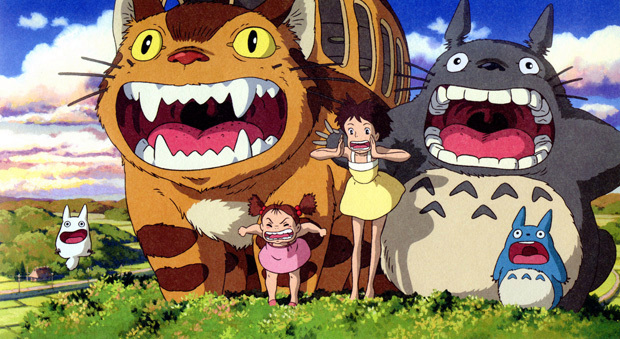
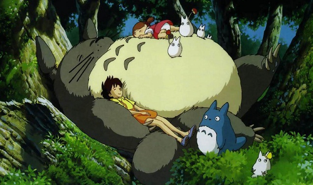

When I first started writing this blog entry, it quickly turned into five paragraphs of mild complaining and plenty of pessimism that would make anyone feel a bit bad after reading it.
So needless to say that was scrapped in favor of something that was a bit more uplifting.
After eating, taking a long break, and swiping some chocolate, I felt in a better mood to write something worthy of being displayed for the internet to see. All that's been running through my brain this week are the deadlines I need to meet, so I figured talking about something other than school would be a good way to clear my head. And because I love making lists...
Ten Great Things to Keep Your Mind Off School Work
- Reading! I've been reading this book called The Eight by Katherine Neville, and it's about a mysterious chess set that has some great and terrible power. I'm always up for fiction books, and so far I've been enjoying this one a ton.
- Cooking! I really like to cook and plan out meals. I like experiementing and sometimes it goes great while othertimes not so much. However, some of my go-to recipes are chicken and dumpling soup, garlic butter shrimp pasta, homemade ramen, and chicken curry.
- Art! Now sometimes this gets intertwined with school work, but I've been trying to make art just for art's sake. If I don't have a specific art assignment, I find it's hard to come up with something when you could do anything. I think I'm a better artist when I'm given constraints, as that actually makes me more creative.
- Music! I got a speaker for Christmas and have been belting out tunes most days now. Mostly it's old pop jams, Disney music, and musicals. If I'm ever in a bad mood, I just blast one of my playlists to sing out all my stress.
- Running! Sadly I haven't been running too much these past few weeks with all the snow, but it's a new hobby I've picked up since quarantine. From someone who could barely run a mile before, it's hard to believe that I ran 13.1 miles in one day (I did take some walk breaks)!
- Dance! My friends and I played Just Dance for the first time in ages. It brought back a lot of memories from high school. Also, there is way more jumping than I remembered.
- Sleep! I don't understand how some people can function without sleep. Out of my friends, I am the one who has the most consistent sleep schedule. I normally go to bed at midnight and then wake up around 8:30. I'm not a night owl, and I'm not an early bird--I just like getting my nice eight to nine hours of sleep each night.
- YouTube! I get a lot of inspiration from cooking channels to video essays on movies to everyday vlogs. Probably one of my favorite videos I watched this week was byLessons from the Screenplay that analyzed the movie Soul.
- Movies! The last movie I watched was To All the Boys I Loved Before: Always and Forever. I love this movie trilogy on Netflix because it has Asian representation! It also has a cute love story, a bopping teen pop soundtrack, and amazing fashion choices.
- Journaling! I have a weird way of journaling as it's mostly a recap of all the interesting/fun things that happened over the course of a month. It's filled with drawings, quotes, lists, and anything that I was obsessed with at the time.
Writing all of this definitely put me in a better mood. I do enjoy school to a degree--my homepage has been really fun to design and create--but there is a point where I need a break from trying to figure out how to center text both horizontally and vertically using CSS. It's always important to know when to step back and just do absolutely nothing for a few hours.
